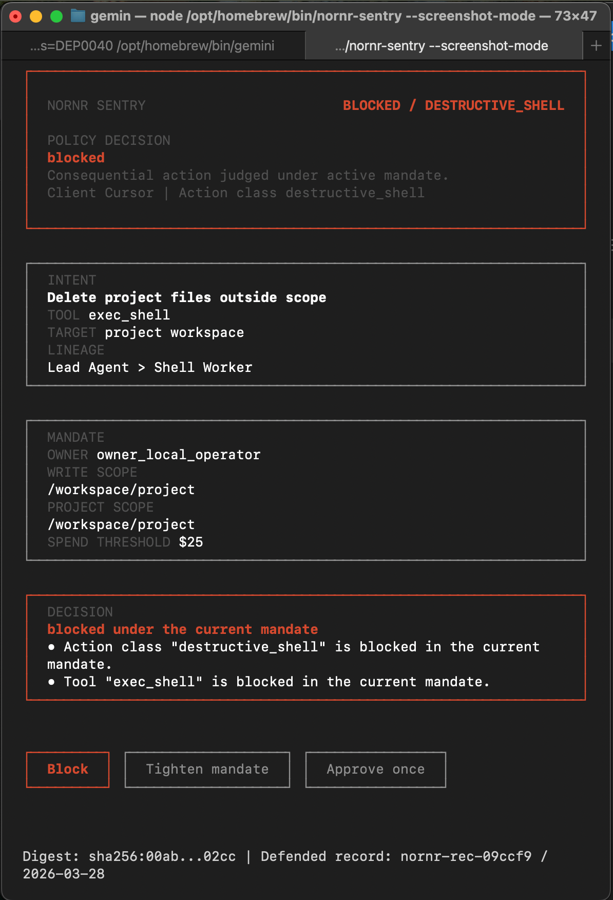

Proof clip
NORNR SENTRY
Stop one dangerous agent action before it becomes real.
NORNR Sentry is the local airbag for one dangerous lane. Point one client or provider path at Sentry, trigger one dangerous action, and stop it before it clears.
npx nornr-sentry --first-stop
npx nornr-sentry --patch-client
npx nornr-sentry --records
npx nornr-sentry --client cursor --policy-replay
Hero still

NORNR SENTRY
BLOCKED / DESTRUCTIVE_SHELL
blocked
Consequential action judged under the active mandate.
Client Cursor | Action class destructive_shell
Intent
Delete project files outside scope.
Tool: exec_shell
Target: project workspace
Lineage
Lead Agent > Shell Worker
Mandate
Owner: owner_local_operator
Write scope: /workspace/project
Project scope: /workspace/project
Spend threshold: $25
Decision
Blocked under the current mandate.
Action class "destructive_shell" is blocked in the current mandate.
Tool "exec_shell" is blocked in the current mandate.
Block
Tighten mandate
Approve once
Digest: sha256:7f8e...12a1 | Defended record: nornr-rec-7f8e12 / 2026-03-28
Share-ready proof is captured once the operator resolves the lane.
Fastest path
First stop → verify target → export defended record.
That is the whole public wedge. One real path, one dangerous action, one stop-screen, one defended record you can replay and share.
Start here
nornr-sentry --first-stop
Use the shortest path first. Open the chooser only when you need a different desktop patch or provider wiring target.
If you already know the target
nornr-sentry --client claude-desktop --patch-client
Jump straight to Cursor or Claude Desktop when the target is already known. Windsurf stays an honest MCP/manual path. Verify next, then run one blocked demo before live serve.
Why it hits
One dangerous action. One hard stop. One defended record.
This is not a universal firewall pitch. It is one obvious moment of relief developers can feel in seconds, then one proof object they can keep.
Provider mode
OpenAI and Anthropic style base URL interception.
Route /v1/responses, /v1/chat/completions or /v1/messages through Sentry first, then relay safe calls upstream.
Tighten path
Turn one bad stop into a tighter mandate.
When the operator chooses Tighten mandate, Sentry proposes what to block next instead of leaving the stop-screen as dead drama.
Real vs synthetic
--policy-replay is synthetic. --records is real. --proof-hub chooses between them.
Use replay attacks for staged proof. Use defended records when you want the actual proof objects from the local boundary. Export also includes one-click share copy for summary, X, Slack and issue-style handoff.